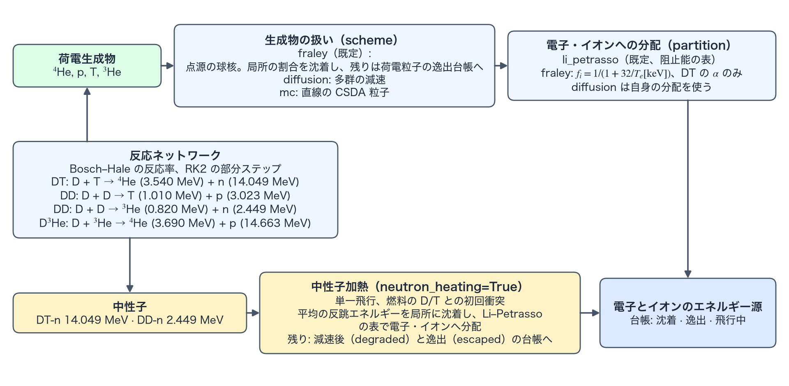

荷電生成物の輸送と付与
この頁は、燃焼で生じた荷電生成物のエネルギーの行き先を述べる。生成物の輸送方式（fraley、diffusion、mc、local）、電子とイオンへの分配、燃焼のエネルギー台帳（energy ledger）である。この頁の計算に固有の用語は用語の節で説明する。
生成物の輸送と電子・イオン分配
既定の scheme="fraley" は、Fraley による α 粒子の飛程の近似式と、点源球の核を使う [1]（点源球の核と保持率）。燃料球の面密度と発生半径から局所の保持率を求め、保持された分を発生したセルへ、残りを荷電粒子の逸出台帳へ送る。scheme="diffusion" は Corman 1975 の多群方程式 [3] により、6 種類の生成物 — チャネル別の荷電生成物である DT の α、DD の陽子・三重陽子（triton）・ヘリオン（helion。³He の原子核）、D³He の陽子と α — について飛行中の比スペクトルを追跡し、群間の減速で失うエネルギーを沈着させる。scheme="mc" は、Yuan らの Monte Carlo 追跡 [4] と同じ型の、直線的に進む連続減速近似の粒子をステップをまたいで保持し、生成物・セル・ステップあたり mc_particles_per_cell 個を標本化する。モンテカルロの集計は統計的だが、各粒子のカウンタ型乱数（counter-based random number generator）の Philox 列（Philox4x32-10）は大域 ID によって独立に決まる。local は 2D RZ 専用で（1D では拒否される）、生成物のエネルギーを輸送せず、発生セルへ全量沈着する（電子・イオンへの分配は他の方式と共通）。
局所沈着に対する既定の分配 partition="li_petrasso" は、初期化時に Li–Petrasso の阻止能を \(T_e,T_i,n_e\) の表にし、実行中は補間だけを行う。もう一方の fraley は \(f_i=1/(1+32/T_e[\mathrm{keV}])\) で DT の α 粒子に限られ、scheme が fraley か local のとき、DD や D³He との併用は拒否される。Fraley の式は DT の α 粒子に対する近似で、反跳した D と T のエネルギーを電子とイオンへ分配できないので、中性子加熱（neutron_heating）との併用も拒否される。多群拡散とモンテカルロは、それぞれ自身の阻止の計算に分配を含んでいるため、このキーを使わない。

この計算で使う用語
荷電生成物の保持率とエネルギーの記帳は、この計算に固有の量で組み立てる。ここに挙げる用語は、TENRYU の実装に固有の意味で使うので、まとめて定義する。
点源球の核と保持率
燃料球（fuel sphere）は、燃料材料の体積分率の和が vf_threshold（既定 \(10^{-3}\)）を超えるセル（燃料セル）のうち、最も内側のセルから最も外側のセルまでの連続した区間である。区間の途中にしきい値以下のセルがあっても、区間に含める。最も外側のセルの外縁の半径を \(R_b\) とする。
点源球の核（point-source sphere kernel）は、荷電生成物のエネルギーのうち燃料球の内側に沈着する割合を、閉じた式で与える。生成物は、発生したセルの中心から等方に出る点源で、一様な媒質の中を直線で進み、速度に比例する電子の抵抗を受けて \(E(s)=E_0(1-s/\lambda)^2\) に従って減速すると仮定する（\(E_0\) は生成時のエネルギー、\(s\) は飛行距離、\(\lambda\) は飛程）。発生点の半径を \(r\)、\(u=r/R_b\)、飛行方向と外向きの動径方向のなす角の余弦を \(\mu\) とすると、発生点から燃料球の表面までの距離は、\(R_b\) を単位として \(L(\mu)=-u\mu+\sqrt{1-u^2+u^2\mu^2}\) である。燃料球の半径を飛程で割った値を \(\tau=R_b\bar\rho/(\rho\lambda)\) と置くと、沈着する割合 \(f(u,\tau)\) は次のようになる。
$$ f(u,\tau)=\frac12\int_{-1}^{1}\Bigl\{1-\bigl[1-\min\bigl(\tau L(\mu),1\bigr)\bigr]^2\Bigr\}\,d\mu . $$ここで \(\bar\rho\) は、発生したセルの中心から \(R_b\) までの動径方向の密度の台形則による平均 [g/cm³]、\(\rho\lambda\) は生成物の飛程を面密度で表した値 [g/cm²] である（\(\rho\lambda/\bar\rho\) が飛程の長さに当たる）。
保持率（retained fraction）は、この \(f(u,\tau)\) である。保持された分 \(f\) は発生したセルへ沈着し（電子とイオンへの分配は partition による）、残りの \(1-f\) は燃料球の外へ出るエネルギーとして荷電粒子の逸出台帳へ送る。中心（\(u=0\)）では \(f=1-[1-\min(\tau,1)]^2\) で、\(\tau\ge1\) なら 1 になる。燃料球の表面（\(u=1\)）では、\(\tau\) を大きくしても \(f\) は 1/2 に近づくだけである（外向きに出る半分が外へ逃げる）。一様な球の内側に一様に分布する点源について平均すると、古典的な式 \(f(\tau)=\tfrac32\tau-\tfrac45\tau^2\)（\(\tau\le\tfrac12\)）、\(f(\tau)=1-\tfrac1{4\tau}+\tfrac1{160\tau^3}\)（\(\tau\ge\tfrac12\)）になる。
飛程（range）は、3.54 MeV の DT の α 粒子については、Fraley の当てはめ式 [1]
$$ \rho\lambda_\alpha=\frac{1.5\times10^{-2}\,T_e^{5/4}}{1+8.2\times10^{-3}\,T_e^{5/4}}\cdot\frac{1+0.17\ln T_e}{1+0.17\ln\bigl(T_e\sqrt{\rho_0/\rho}\bigr)}\ \ [\mathrm{g/cm^2}],\qquad \rho_0=0.213\ \mathrm{g/cm^3} $$で与える（\(T_e\) は keV、\(\rho\) は g/cm³ で、\(T_e\) は 0.1 keV 以上に、2 つの対数の因子は 0.15 以上に制限する）。他の生成物の飛程は、\(\lambda_s=\lambda_\alpha\sqrt{A_sE_s/(A_\alpha E_\alpha)}\,(Z_\alpha/Z_s)^2\) で α 粒子から換算する（\(A\) は質量、\(E\) は生成エネルギー、\(Z\) は電荷）。セルの組成（燃料と灰）に応じて、電子の項とイオンの項を補正し、等モルの DT では補正が 1 になる。直線飛行、一様な媒質、動径方向の平均密度という近似を使うので、斜めに進む弦の密度の層構造は反映しない。
この核は、飛行を追跡せずに、荷電生成物のうち燃料の自己加熱に使われる分と逃げる分を、1D の球対称の計算で安価に見積もるために使う。既定の scheme="fraley"（1D 専用）が使い、保持率が電子とイオンへ沈着するエネルギーと逃げるエネルギーを決めるので、自己加熱の強さと点火余裕に効く。\(\tau\) が小さい（飛程が燃料球より長い）ほど、逃げる割合が大きい。たとえば \(u=0\)、\(\tau=0.5\) なら \(f=0.75\)、\(u=0.5\)、\(\tau=1\) なら \(f=0.94\) である。
飛行中と燃焼の台帳
飛行中（in flight）のエネルギー \(E_{inflight}\) は、すでに生成されたが、まだセルへ沈着も系外へ逸出もしていない荷電生成物が運ぶエネルギーである。多群拡散では群ごとの比スペクトル \(Y_g=N_g/\rho\) [1/g]（\(N_g\) は群 \(g\) の粒子数密度。比在庫と同じく質量あたりで保持する）が、モンテカルロではステップをまたいで保持する粒子が、これを次のステップへ持ち越す。fraley と local では、生成物は生成したステップのうちに沈着か逸出のどちらかに決まるので、\(E_{inflight}=0\) である。
燃焼の台帳（burn ledger）は、燃焼が解放したエネルギーの行き先を記帳する量で、全体のエネルギー台帳の一部である。荷電生成物については、毎ステップ次の恒等式を丸め誤差の範囲で課す（解放 = 沈着 + 逸出 + 飛行中の変化）。
$$ E_{rel}=E_{dep}+E_{esc}+\Delta E_{inflight}. $$ここで \(E_{rel}\) は荷電生成物が解放したエネルギー、\(E_{dep}\) は電子とイオンへ沈着したエネルギー、\(E_{esc}\) は系外へ出たエネルギー（fraley では燃料球の外へ出る分、diffusion と mc では外面から出る分）、\(\Delta E_{inflight}\) はそのステップでの飛行中のエネルギーの変化である。中性子については、neutron_heating を切ると解放した全エネルギーが逸出に入り、有効にすると「放出 = 沈着 + 減速後 + 逸出」を課す（初回衝突と単一飛行）。全体のエネルギー台帳には、流体へ沈着した分だけを外部からの源として加える。逸出分と中性子は流体に入らないので、損失としては数えない。履歴の burn/released、burn/dep_e、burn/dep_i、burn/esc_charged、burn/esc_neutron、累積の burn/E_released_cum など、および burn/E_inflight（diffusion と mc だけ）が、この台帳である（履歴のチャネル）。
namelist による制御
以下は最上位の Burn ブロックのうち、荷電生成物の輸送と分配に関わるキーである。燃焼全体のキーは概要の頁にある。表の既定値は、デッキで指定しないときの値である。Studio は燃焼を 1D 球対称の計算にだけ許し、fraley、diffusion、mc を書き出す。
| キー | 既定値 | 用途 |
|---|---|---|
scheme | "fraley" | 荷電生成物の輸送方式。1D は fraley、diffusion、mc、2D RZ は local、diffusion。2D では既定の fraley が拒否されるので、省略できず、明示する。 |
partition | "li_petrasso" | 局所沈着の電子・イオン分配。もう一方の fraley は DT の α 粒子専用で、neutron_heating とも併用できない。 |
vf_threshold | 1e-3 | 燃料セルを見分けるしきい値（0 より大きく 1 より小さい値）。燃料材料の体積分率の和がこの値を超えるセルが燃料セルである。1D では、燃料セルの最内と最外のセルのあいだのセルだけが反応し、最外セルの外縁が燃料球（用語）の半径になる。2D では、燃料セルだけが反応する。 |
diffusion_groups / diffusion_E_min_keV | 30 / 20.0 | 荷電粒子拡散の群数と、群格子の下端：これを下回るまで減速した生成物は、残りのエネルギーをその場に付与する。既定の 20 keV は MeV 級の生成エネルギーよりはるかに低く、これより下で残る飛程は無視できる。 |
mc_particles_per_cell | 16 | モンテカルロの、生成物・セル・ステップあたりの標本数。 |
検証
- 単体試験
test_burn_depositionの節 G-K0、G-K1、G-K2（試験のタグの凡例）は、それぞれ Fraley の飛程の基準値、点源球の核の恒等式、球平均の閉じた形の解を検査し、節 G-P1、G-P2 は、Li–Petrasso の公刊済み阻止能の参照値（文献 [2] の Table I）と、意図的に異なる値をとる Fraley の分配を検査する。6 回の実行からなるマイクロスフィア（microsphere）の検査burn_rung2_microsphereは、燃料対の上限、反応率のスケール、初期の α 粒子の再捕獲による自己加熱を組み合わせる。 - モンテカルロについては、同じ乱数の種（seed）での変動係数（coefficient of variation）0.1% 以下、異なる乱数の種での変動係数 5% 以下と、乱数列の独立性を別途検査する。
参考文献
- G. S. Fraley, E. J. Linnebur, R. J. Mason, and R. L. Morse, "Thermonuclear Burn Characteristics of Compressed Deuterium-Tritium Microspheres," Phys. Fluids 17, 474–489 (1974). doi:10.1063/1.1694739
- C.-K. Li and R. D. Petrasso, "Charged-Particle Stopping Powers in Inertial Confinement Fusion Plasmas," Phys. Rev. Lett. 70, 3059–3062 (1993). doi:10.1103/PhysRevLett.70.3059
- E. G. Corman, W. E. Loewe, G. W. Cooper, and A. M. Winslow, "Multi-Group Diffusion of Energetic Charged Particles," Nucl. Fusion 15, 377–386 (1975). doi:10.1088/0029-5515/15/3/003
- J. Yuan, G. A. Moses, and P. W. McKenty, "Monte Carlo Charged-Particle Tracking and Energy Deposition on a Lagrangian Mesh," Phys. Rev. E 72, 046706 (2005). doi:10.1103/PhysRevE.72.046706